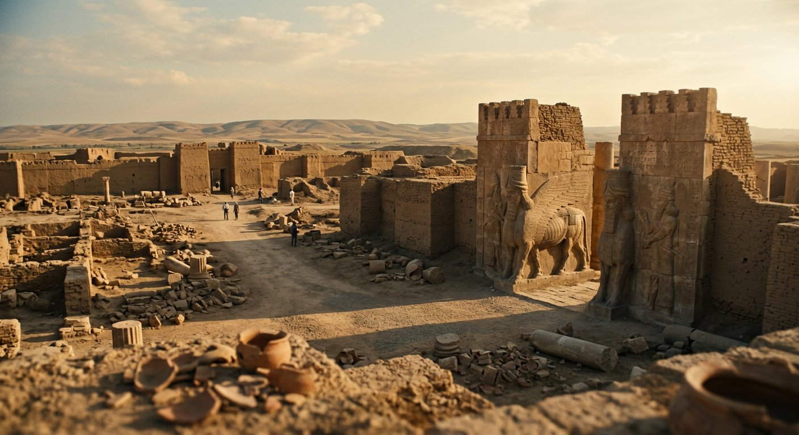

Les accomplissements — Salle 04
Ninive : la capitale effacée de la carte
« Il est bon, il est la demeure des siens; il n'en subsistera rien. »Nahum 1:8; 3:19
Deux mille quatre cents ans de silence. La plus grande ville du monde ancien, rayée de la carte.
Lire la transcription
Ninive fut, pendant trois siècles, la capitale la plus importante du Proche-Orient ancien. En six cent douze avant notre ère, une coalition babylonienne et médienne la prend. La Chronique babylonienne de la chute de Ninive, conservée au British Museum sous l'inventaire B M vingt et un mille neuf cent un, documente l'événement. Puis vint le silence. En quatre cent un avant notre ère, Xénophon passe à proximité des ruines avec les Dix-Mille et décrit une grande ville abandonnée dont il ne connaît pas le nom. La ville ne fut redécouverte qu'au dix-neuvième siècle, par Botta en mille huit cent quarante-deux, puis par Layard. La prophétie n'annonce pas seulement une catastrophe : elle annonce une absence permanente. Et c'est exactement ce qui s'est produit. Pendant vingt-quatre siècles, personne n'a rebâti Ninive. C'est la seule grande capitale du Proche-Orient ancien à n'avoir jamais été réhabitée.
Le texte
Quatre détails, une fin
Nahum 1:8; 2:6, 8; 3:7, 13, 15, 19; Sophonie 2:13-15.
- Les « portes des fleuves » s'ouvrent — « On ouvre devant toi les portes des fleuves, et le palais s'effondre » (Nahum 1:8; 2:6). L'expression désigne les postes de verrouillage hydraulique des remparts.
- Un feu dévorant — « Le feu dévorera tes charbons, le feu consumera ta cité » (Nahum 3:13); « sous elle sont les flammes, le feu est autour d'elle » (Nahum 1:6).
- Désolation aride — « Elle sera devastation, désolée, déserte; et dans le désert sera son habitation » (Nahum 3:19); « elle prendra la forme d'une forêt, elle sera comme une ville de Jéhuz » (Sophonie 2:13).
- Elle ne se relèvera pas — « Que celui qui t'afflige ne soit plus; il ne sera plus la destruction » (Nahum 1:9); « Ninive ne sera plus reconstruite » (Nahum 3:19).
Ninive fut, pendant trois siècles, la capitale la plus importante du Proche-Orient ancien. 612 av. n. è., une coalition babylonienne et médienne la prend. La Chronique babylonienne de la chute de Ninive (British Museum, BM 21901) documente l'événement; Diodore de Sicile (II, 26-27) ajoute qu'une crue du Khosr abattit une partie du rempart, détail qui explique le verset des « portes des fleuves ». Les fouilles ont mis au jour des couches d'incendie et de carbonisation.
Puis vint le silence. En 401 av. n. è., Xénophon passe à proximité des ruines avec les Dix-Mille et décrit une grande ville abandonnée dont il ne connaît pas le nom (Anabase III, 4, 10-12). La ville ne fut redécouverte qu'au XIXᵉ siècle : Paul-Émile Botta y creuse en 1842-1843, Layard à partir de 1845. Ses bas-reliefs sont aujourd'hui au British Museum et au Louvre.
La prophétie n'annonce pas seulement une catastrophe : elle annonce une absence permanente. Et c'est exactement ce qui s'est produit : pendant vingt-quatre siècles, personne n'a rebâti Ninive. C'est la seule grande capitale du Proche-Orient ancien à n'avoir jamais été réhabitée.
Ninive a-t-elle été incendiée?
Oui. Les fouilles ont identifié des niveaux de destruction par le feu et des couches de carbonisation. La Chronique babylonienne (BM 21901) documente la prise de la ville en 612 av. n. è.
Source : British Museum BM 21901; Diodore de Sicile II, 26-27; fouilles de Kuyunjik
La crue a-t-elle contribué à la chute?
Diodore de Sicile (II, 26) rapporte qu'une crue du Khosr renversa les remparts. C'est une source antique, utilisée ici comme indication, non comme certitude géologique.
Source : Diodore de Sicile, Bibliothéque historique II, 26-27
La ville est-elle restée déserte?
Oui, pour l'essentiel. Xénophon (Anabase III, 4, 10-12) la décrit comme une grande cité abandonnée dont il ignore le nom. Aucune reconstruction importante n'a suivi pendant vingt-quatre siècles.
Source : Xénophon, Anabase III, 4, 10-12; fouilles modernes
Que signifie une ville rayée?
Naum est un poète de la justice divine : il annonce la chute de l'empire quiuple terrorisait les peuples voisins. Ce qui frappe, c'est la précision du destin annoncé pour la capitale la plus puissante du moment — et son accomplissement intégral.
Source : Nahum 1-3